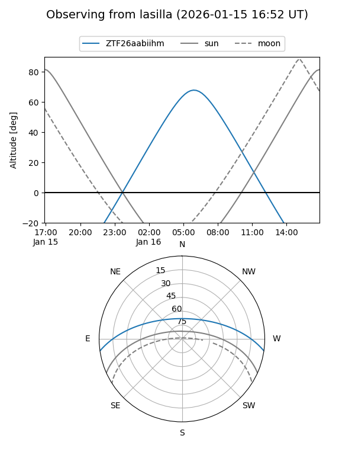
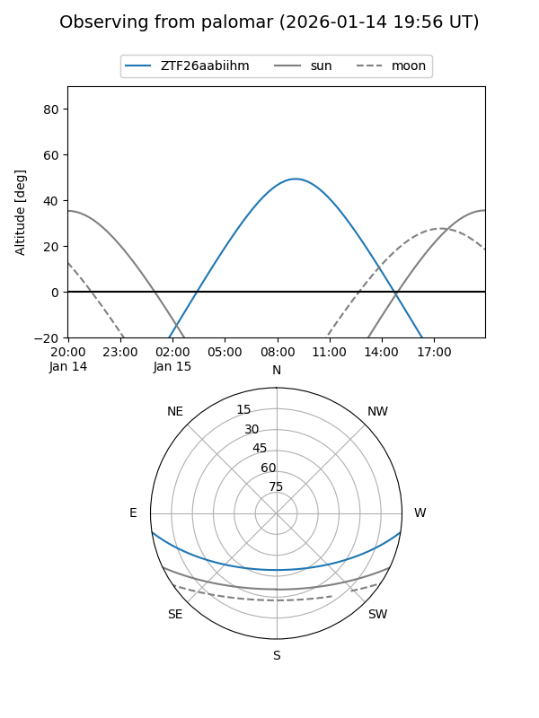

ZTF26aabiihm
Target ZTF26aabiihm at 2026-01-15 10:55
Aliases and brokers:
FINK: link
Lasair: link
ALeRCE: link
alt names
ZTF26aabiihm (ztf,fink_ztf)
Coordinates:
equatorial (ra, dec) = 133.4954,-7.12218
equatorial (HMS+DMS) = 08:53:58.89,-07:07:19.84
galactic (l, b) = (234.6986,+23.17159)
Flags:
Photometry:
last ztfr=19.81
1 ztfr detections
Lightcurve

Visibility


Additional plots